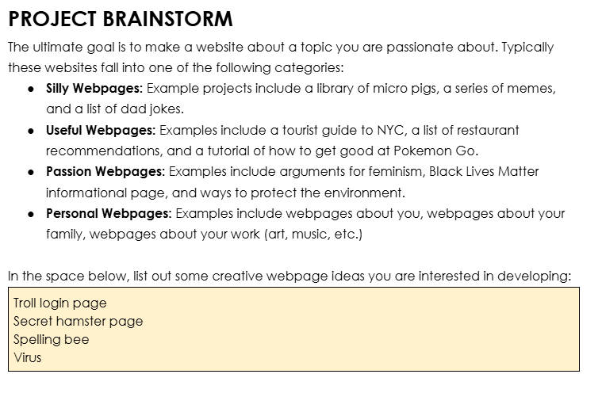
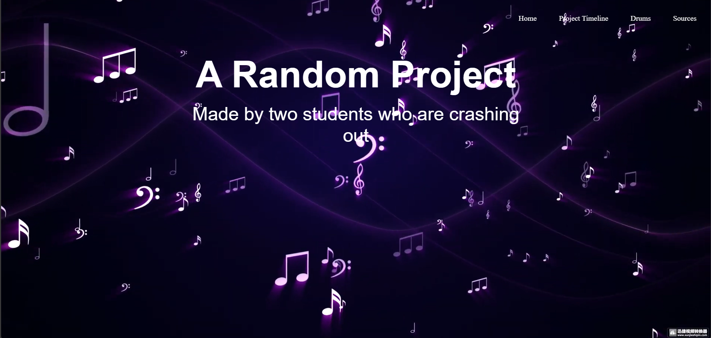

Wait... This isn't home!?!? Its...
Initial Brainstorming Process
Initially we thought of something like a troll website that tries to
trick you every step of the way when you try to log in to the website.
However, we soon realized that that would be too generic, and we would
copy too much code, thus scrapping it. We came up with other ideas
like Wordle, a spelling bee, etc. Eventually we settled into creating
a website that allows the user to press certain keys to play musical
sounds.

First Steps
We started by spending a significant amount of time researching how to
assign a sound to a keyboard key. With a few tweaks to borrowed
JavaScript code from Stack Overflow (referenced in sources), we
managed to create a functioning script that made this possible, while
also minimizing the amount of javascript used.
Creating the Core Components
We created the Homepage, though without its few mistakes, as well as
creating a navigation bar to get here, Sources, and the point where
you can access the music portion. We also managed to finish up the
rest of the instruments that a drummer would use, such as cymbals,
hihats, and bass. This is also the part where I, Alex, had a little
fun.

Finishing Up
We finished up by coding this page, making sure the sources listed in
sources.html were up-to-date, and adding navigation bars to any pages
that were lacking it. To conclude work on this project, we checked as
thoroughly as we could for any bugs or missing components in the code,
as well as for any appearance-related issues in the actual website. We
plugged every file into their respective HTML, CSS, and JS formatters
to ensure that the code was clean. We checked off each section of the
project rubric and published the website on Nathaniel's CS Lab
computer in Stuyvesant.